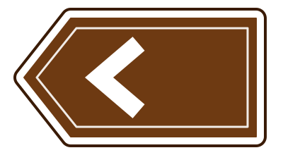

Language
Audio
Question 5/760
5 of 760

What does a sign with a brown background show?
نیشانەیەک کە پشتەڕەنگی قاوەیی هەیە، چی نیشان دەدات؟
Select one answer
DVSA revision question
Choose one answer
Motorway routes
ڕێگاکانی خێرا (مۆتۆڕۆی)
Tourist attractions
شوێنە گەشتیارییەکان
Primary routes
ڕێگا سەرەکییەکان
Local bus routes
ڕێڕەوی پاسی ناوخۆیی